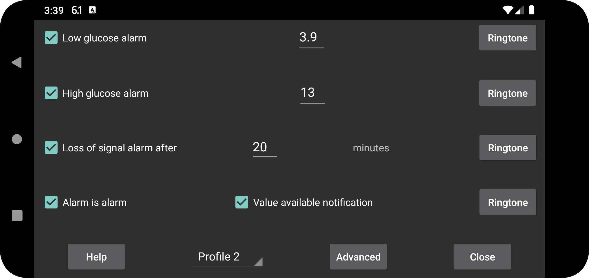

ar be de es fr hi it nl pl pt ru sv tr uk uz zh en
The stream values received via Bluetooth can be used to set low and high glucose alarms.
Value at and below which an alarm should go off.
Value at and above which an alarm should go off.
Specify after how many minutes an alarm should go off if no glucose value is received via Bluetooth.
Alarms will stop when one of the following conditions is satisfied:
- The specified duration has elapsed;
- The curve view is touched;
- The Android notification of Juggluco is touched (in unlocked state);
- Cancel button is touched of the alarm notification in Juggluco;
- The Floating Glucose is touched.
Sometimes the sensor doesn’t work. When you turn this on, you will be notified when the sensor works again, but only when you have seen that the value is missing in the Juggluco app itself. When you only know that the value was missing because of Juggluco's notification or its watch face, will the value available notification not be evoked.
For each alarm you can specify which Ringtone to play and for how long.
When “alarm is alarm” is checked, the Ringtone played for low, high and loss of signal alarms is given Alarms sound category. This means that in Android settings, it's volume is managed with the Alarms volume lever and it is not silenced when sound of the whole phone is turned off or set to vibration. When Alarm is alarm is not checked, the notification volume lever is used on phones and the system lever on Samsung Galaxy Watch 4-7. This is always the case for the value available notification.
Specify for which profile these settings are. This way you can change between settings for alarms and talk. You can specify a profile to be automatically turned on at a certain time under Advanced → Schedules.
Menu with advanced alarms: very low, very high, soon low, soon high and you can schedule profiles to become active at certain times.